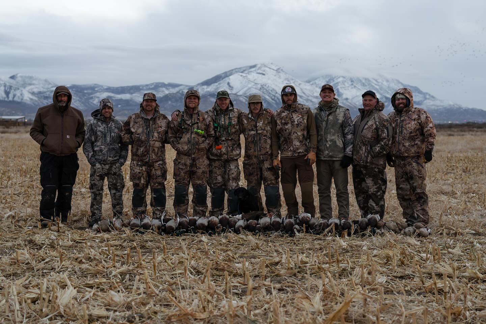

Episode 29 · November 26, 2024 · 2940
(EP:29) Field Hunting Mallards -Tips, Tricks and Bird Dogs.

About This Episode
In this episode we just finished up an awesome Mallard field hunt. We go over strategy and how we did it. We also talk about gear and the dogs. Hope you guys enjoy and can glean some good information from this one. We only had three mics, but four people, so I apologize in advance for any audio that is not super clear. Enjoy everyone and good hunting!
Questions about the training topics in this episode? Tyce works with bird dog owners and hunters through Utah Bird Dog Training. Reach out to work with him directly.
Resources & Links
- Kuranda Dog Beds — Elevated, chew-proof dog beds.
- Utah Bird Dog Training — Tyce's professional training services.
Transcript
Full transcript for Episode 29: (EP:29) Field Hunting Mallards -Tips, Tricks and Bird Dogs..
Tyce
Hey everyone, welcome to the Bird Dog Podcast. My name is Tyce. I've got Josh and Orlin with me today — both are part of the team here at Utah Bird Dog Training, and both are serious waterfowlers. We just came off a great cornfield mallard hunt this morning and I want to break it down with you guys. Josh, give the overview.
Josh
We hunted a cut cornfield with some grain still on the ground. It was a stormy day — super windy, rain — and we'd seen birds working this field a couple of times but it hadn't really been getting hammered. We thought the weather would push them around, so we committed to it. Set up at first light with about five to six dozen decoys in a big W pattern, heavy on family groups with natural spacing. Then we did something a little different this morning — we ran five Mojo spinners, but two of them we placed super low, right at ground level. I wanted it to look like birds fluttering over the corn dirt instead of just a bunch of spinning decoys all at the same height. Break up the uniformity, make it look like birds actually landing and feeding. We think those low Mojos were a key part of getting birds to commit.
Tyce
Walk us through the pattern rationale — back of the feed versus front.
Orlin
When ducks are in a feeding field, the birds at the back of the group are the ones that just landed — they're working forward toward the feed. The birds at the front are the ones that have been there a while and are feeding actively. When incoming birds decoy in, they want to join the back of the group and work forward. So having your landing zone set up on the back side of the spread, with birds that look like they just touched down, is what pulls birds in tight. We had the lower Mojos placed where the landing zone would be — birds fluttering just over the ground, like they're finishing their approach. It just looked real.
Josh
First flock came in right at first light while we were still finishing the blind brush. About 30 birds, cupped up and working hard in that wind. We could tell immediately it was going to be a good morning. We limited out in right around an hour. Multiple groups, and on the stormy days those birds just sit in the wind and float. They were at 20 yards and holding position. It was as easy a shot as you're going to get on mallards.
Tyce
Tips for field hunting ducks — what matters most?
Josh
Scout the field first. Know where those birds are landing, know the pattern before you commit. A lot of guys want to throw out every decoy in the trailer trying to traffic birds, but if you know the X and you're set up on it, you don't need a giant spread. We've had great field hunts with modest numbers of decoys when we were in the right spot. You don't earn your way onto the X with more decoys — you earn it by doing the legwork to find where the birds want to be. On Mojos: they work great on stormy, overcast days when the movement stands out. On calm, sunny days with clear visibility, five Mojos can actually work against you — birds may flare off the aggressive spinning motion. Read the conditions. Stormy and overcast? Run 'em. Bluebird and calm? Consider pulling them or cutting the number down. And always brush your blind. We use tumbleweed — it's everywhere in Utah and it's perfect. You can build a natural-looking hide in minutes if you've got good material.
Tyce
One more on geese: we had some geese cupped up over our spread with the Mojos still running this season and they came all the way in. People say geese hate Mojos but I don't think it's as absolute as people make it out to be. If the birds want to be there and the spread looks right, geese will work it. Thanks for coming on guys, great hunt this morning.
About the Host
Tyce Erickson
Tyce Erickson is a professional bird dog trainer and the owner of Utah Bird Dog Training in Utah. For nearly two decades he has worked with pointing dogs, retrievers, and family hunting dogs — helping owners build dogs that are capable and enjoyable in the field. The Bird Dog Podcast is an extension of that work: honest conversations on training, hunting, breeding, and everything that goes into a life spent working dogs.
More About Tyce